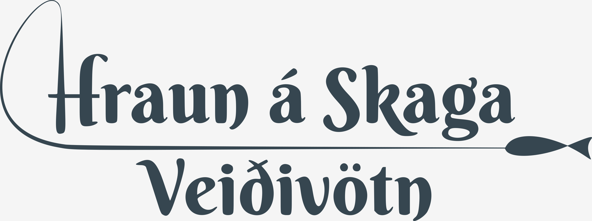
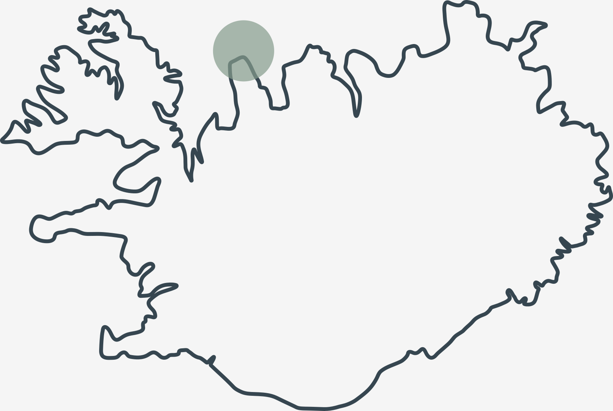
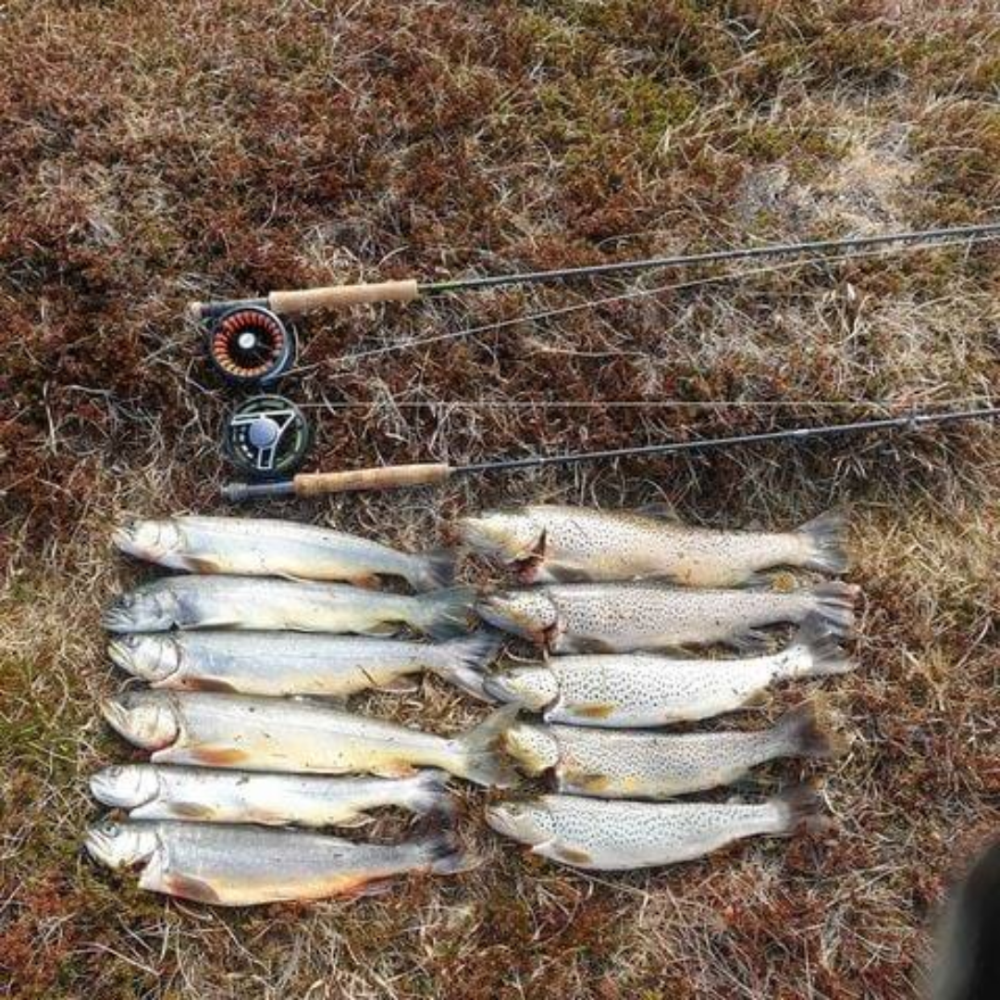
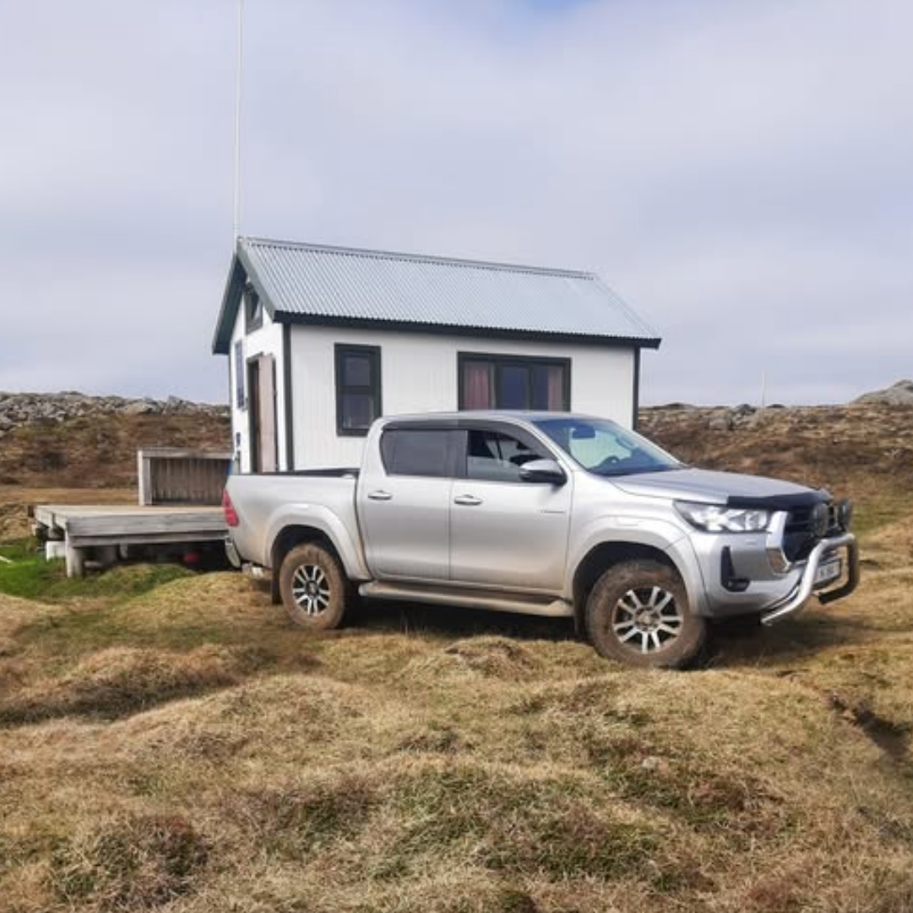
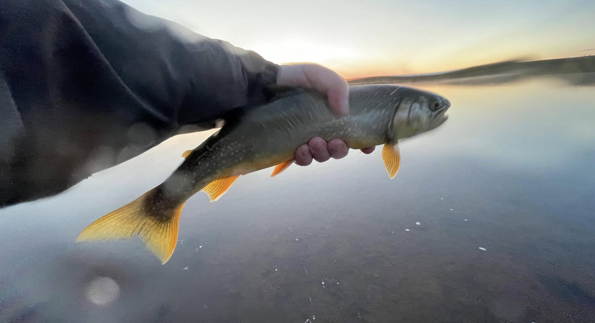

Á Hrauni á Skaga eru fjölmörg veiðivötn með prýðilegri silungsveiði. Hægt er kaupa veiðileyfi, bæði dagsleyfi og með gistingu í veiðihúsum sem tilheyra jörðinni. Fyrir pantanir er haft samband við Þórunni í síma 868 9196 eða á netfangið l28berg[at]simnet.is.

Þegar ekið er til Hrauns (66°06′35.35″N, 20°06′26.62″W)
Opna í Google Maps
er farið um Skagaveg (745).
Frá Blönduósi er beygt til vinstri út á Þverárfjallsveg og af honum er beygt til vinstri út á Skagastrandarveg.
Frá Sauðárkróki er keyrt norður Þverárfjallsveg og beygt til hægri út á Skagaveg.


